Laporan Praktikum Aplikasi Mobile: Arsitektur Navigasi serta Integrasi Aplikasi Expense Tracker dengan Local Storage
1. Pendahuluan
Praktikum kelima Aplikasi Mobile ini membahas arsitektur navigasi pada Flutter melalui penerapan Named Routes dan BottomNavigationBar. Named Routes memungkinkan seluruh halaman aplikasi didaftarkan secara terpusat di dalam MaterialApp sehingga perpindahan halaman cukup dilakukan dengan memanggil nama rutenya, sedangkan BottomNavigationBar digunakan untuk berpindah antara halaman Beranda, Riwayat, dan Profil tanpa mengganti Scaffold utama.
Selain itu, praktikum ini juga menjadi tugas akhir yang menggabungkan seluruh hasil Praktikum 1 sampai 5 ke dalam satu aplikasi Expense Tracker. Karena praktikum sebelumnya masih menggunakan data statis, aplikasi dilengkapi dengan local storage berbasis SQLite sehingga data yang dimasukkan pengguna tidak hilang, serta fitur register dan login yang datanya juga tersimpan di database. Desain antarmuka dari praktikum sebelumnya tetap dipertahankan, dengan penyesuaian warna tema menjadi indigo.
Tujuan Praktikum:
- Mahasiswa mampu menerapkan Named Routes untuk navigasi yang terpusat dan rapi.
- Mahasiswa mampu membangun menu navigasi bawah menggunakan BottomNavigationBar.
- Mahasiswa mampu mengintegrasikan halaman Beranda, Riwayat, dan Profil dalam satu wadah.
- Mahasiswa mampu menerapkan local storage menggunakan SQLite agar data aplikasi tersimpan secara permanen.
- Mahasiswa mampu membangun fitur register dan login yang datanya disimpan pada local storage.
2. Langkah Kerja
A. Mendaftarkan Named Routes
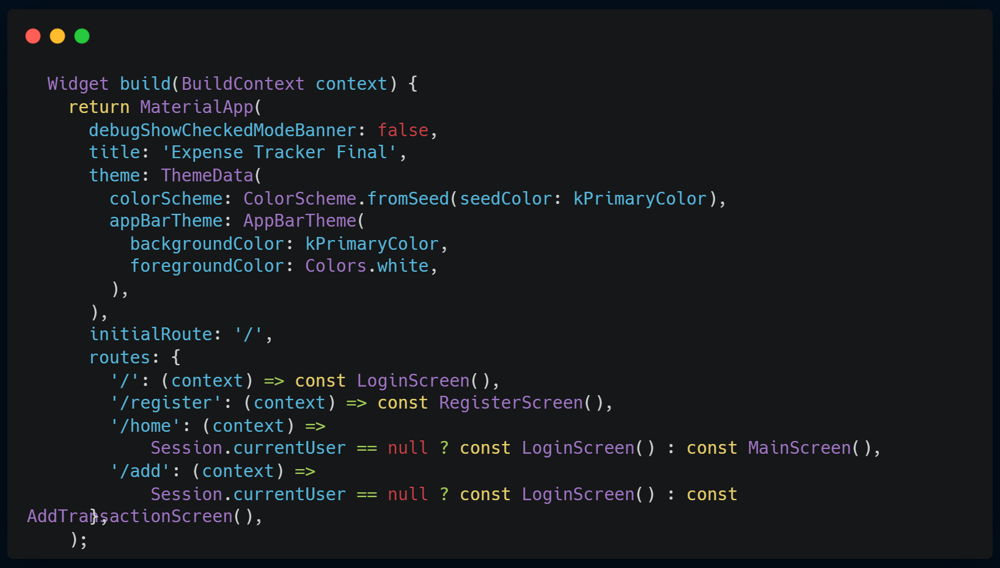
Kode Program: Named Routes pada main.dartPada main.dart, parameter home pada MaterialApp diganti dengan initialRoute dan routes. Rute '/' diarahkan ke LoginScreen karena pengguna harus masuk terlebih dahulu, kemudian rute '/register' ke RegisterScreen, '/home' ke MainScreen yang berisi tab, dan '/add' ke AddTransactionScreen. Rute '/home' dan '/add' memeriksa Session.currentUser terlebih dahulu, sehingga apabila belum ada pengguna yang login, misalnya ketika halaman browser dimuat ulang, aplikasi menampilkan halaman login alih-alih halaman yang membutuhkan data pengguna. MaterialApp juga mengatur tema aplikasi melalui ColorScheme.fromSeed dan AppBarTheme dengan warna utama kPrimaryColor.
B. Membuat Penampung Tab (MainScreen)
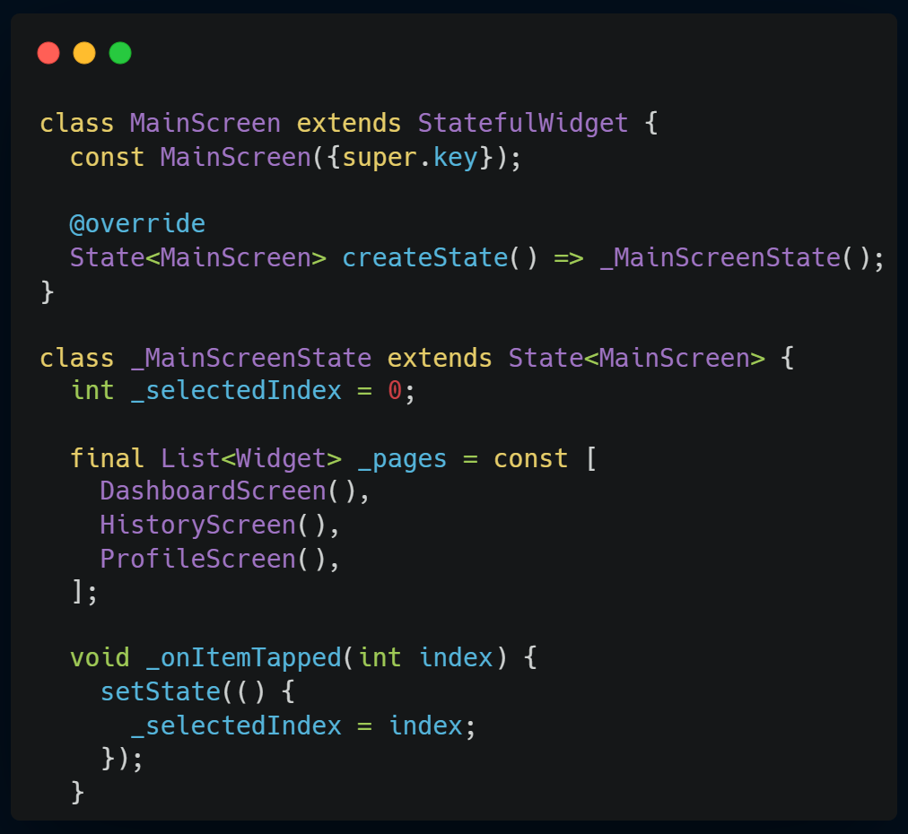
Kode Program: State dan Daftar Halaman pada MainScreenMainScreen pada main_screen.dart dibuat sebagai StatefulWidget karena tab yang aktif akan terus berubah. Variabel _selectedIndex bernilai awal 0 sehingga tab Beranda aktif secara default, sedangkan list _pages berisi tiga halaman yang akan ditukar, yaitu DashboardScreen, HistoryScreen, dan ProfileScreen. Method _onItemTapped memanggil setState untuk memperbarui _selectedIndex sesuai indeks tab yang ditekan pengguna.
C. Merangkai BottomNavigationBar
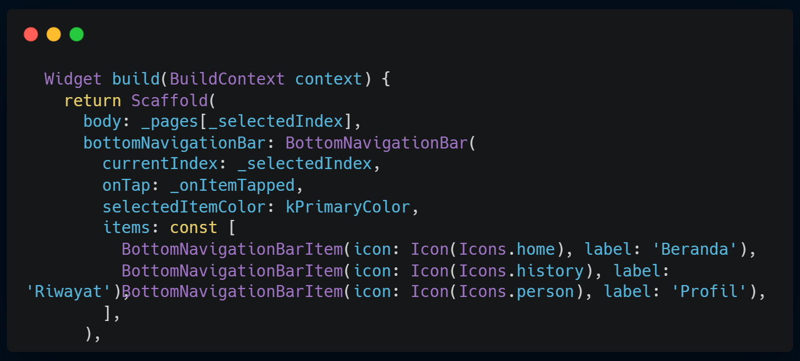
Kode Program: BottomNavigationBar pada MainScreenMethod build pada MainScreen mengembalikan Scaffold dengan body berupa _pages[_selectedIndex], sehingga isi layar berganti mengikuti tab yang aktif. Properti bottomNavigationBar diisi BottomNavigationBar dengan currentIndex yang terikat pada _selectedIndex, onTap yang memanggil _onItemTapped, warna item aktif kPrimaryColor, serta tiga BottomNavigationBarItem berlabel Beranda, Riwayat, dan Profil.
D. Pembaruan Tombol Tambah Transaksi (pushNamed)
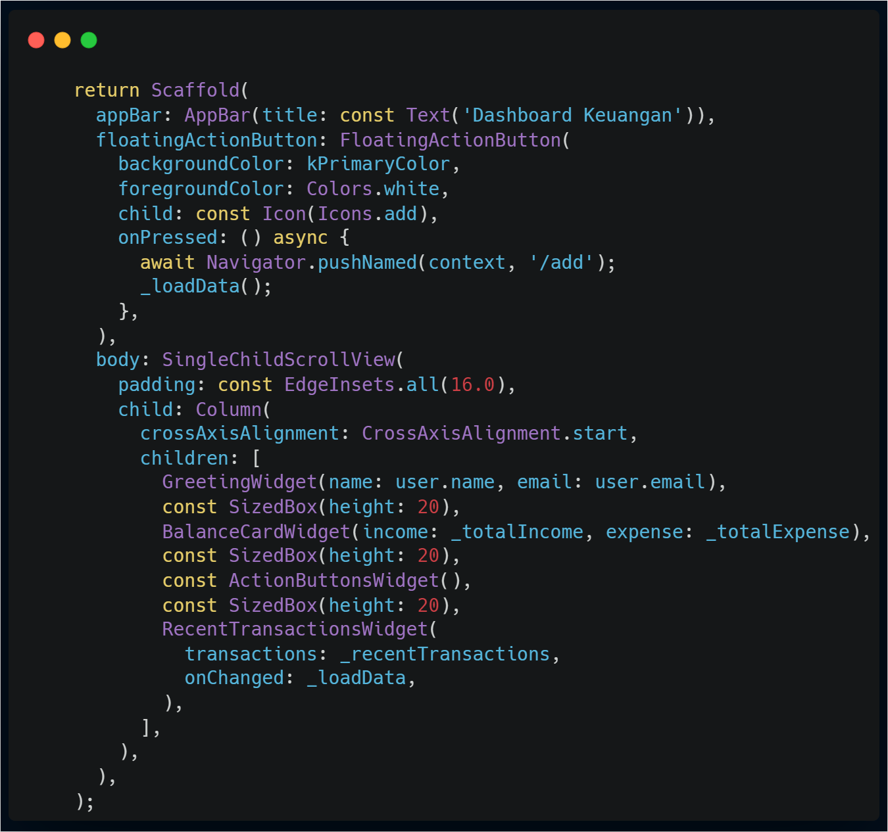
Kode Program: FloatingActionButton dengan Navigator.pushNamedFloatingActionButton pada DashboardScreen yang sebelumnya menggunakan Navigator.push dengan MaterialPageRoute kini diganti menjadi Navigator.pushNamed(context, '/add'). Pemanggilan tersebut ditunggu menggunakan await, sehingga setelah halaman formulir ditutup, method _loadData dijalankan untuk memuat ulang data transaksi dan saldo dari database.
Hasil Akhir
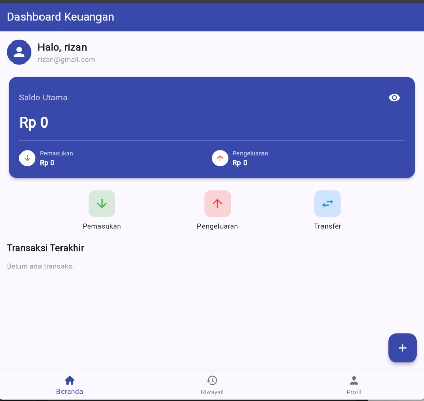
Hasil Akhir: Halaman Beranda dengan BottomNavigationBarSetelah login, aplikasi menampilkan halaman Beranda dengan BottomNavigationBar di bagian bawah layar yang berisi tab Beranda, Riwayat, dan Profil. Tab yang sedang aktif ditandai dengan warna indigo, dan menekan tab lain akan mengganti isi layar tanpa berpindah Scaffold utama.
3. Tugas/Latihan Praktikum 5
A. Halaman Riwayat Transaksi
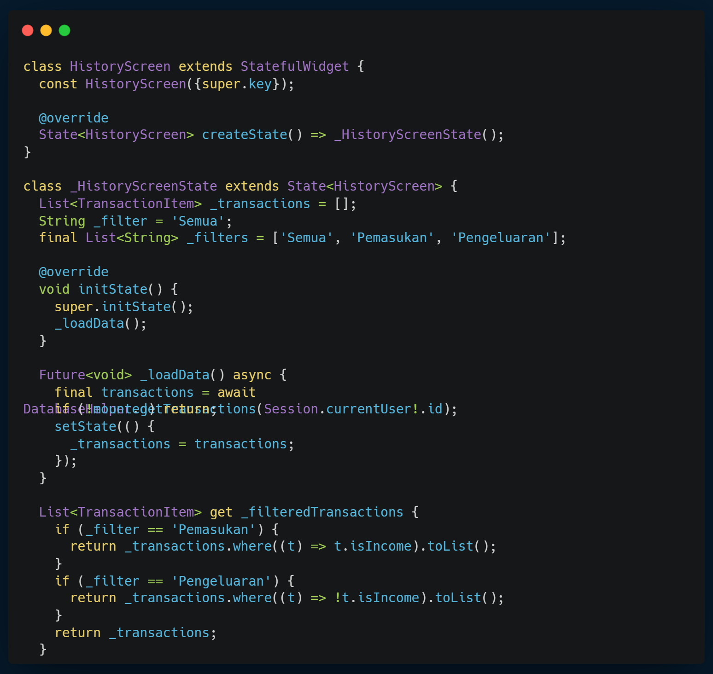
Kode Program: Pengambilan Data dan Filter pada HistoryScreenHistoryScreen dibuat sebagai StatefulWidget yang menyimpan list _transactions, pilihan filter aktif _filter dengan nilai awal 'Semua', serta daftar pilihan filter berisi Semua, Pemasukan, dan Pengeluaran. Method _loadData dipanggil pada initState untuk mengambil seluruh transaksi milik pengguna yang sedang login dari database. Getter _filteredTransactions kemudian menyaring list tersebut menggunakan method where berdasarkan properti isIncome, sehingga hanya transaksi yang sesuai dengan filter yang dikembalikan.
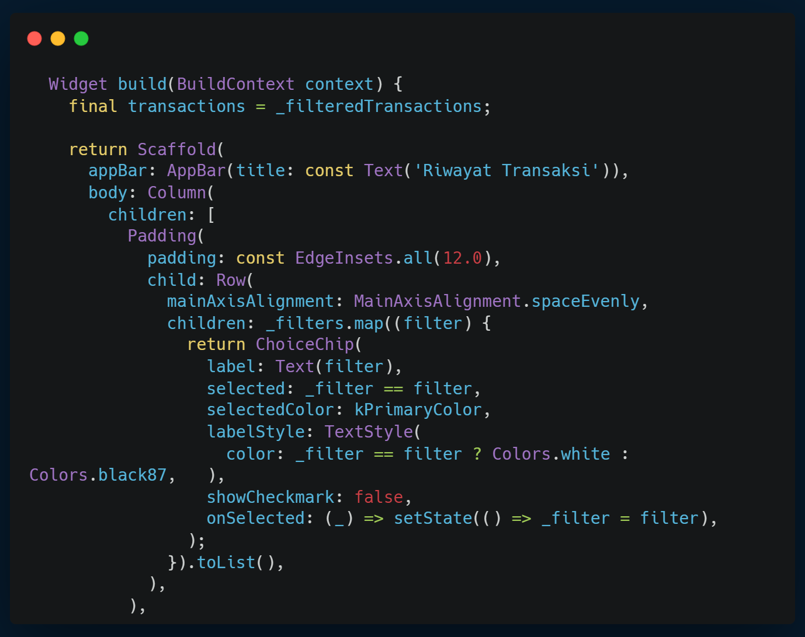
Kode Program: ChoiceChip dan ListView pada HistoryScreenBagian atas halaman berisi Row yang menampilkan ChoiceChip untuk setiap pilihan filter. Chip yang terpilih diberi warna kPrimaryColor dengan teks putih, dan menekan chip akan memanggil setState untuk mengganti nilai _filter. Di bawahnya, widget Expanded berisi ListView.separated yang menampilkan transaksi hasil filter menggunakan TransactionTile dengan Divider sebagai pemisah, atau teks "Belum ada transaksi" apabila datanya kosong.
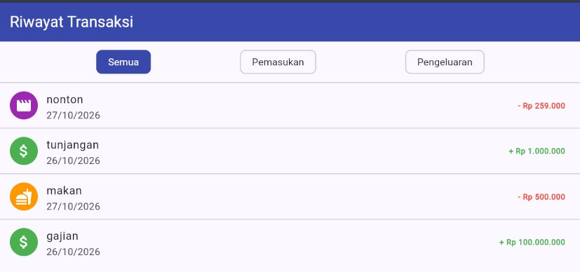
Hasil Tampilan: Halaman Riwayat dengan Filter SemuaHalaman Riwayat menampilkan seluruh transaksi pengguna dengan urutan terbaru di bagian atas, lengkap dengan ikon kategori, tanggal, dan nominal yang berwarna hijau untuk pemasukan dan merah untuk pengeluaran.
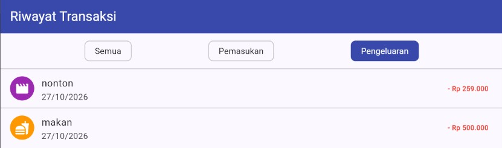
Hasil Tampilan: Halaman Riwayat dengan Filter PengeluaranKetika filter Pengeluaran dipilih, daftar langsung hanya menampilkan transaksi pengeluaran tanpa perlu memuat ulang data dari database, karena penyaringan dilakukan pada data yang sudah tersimpan di state halaman.
B. Halaman Profil
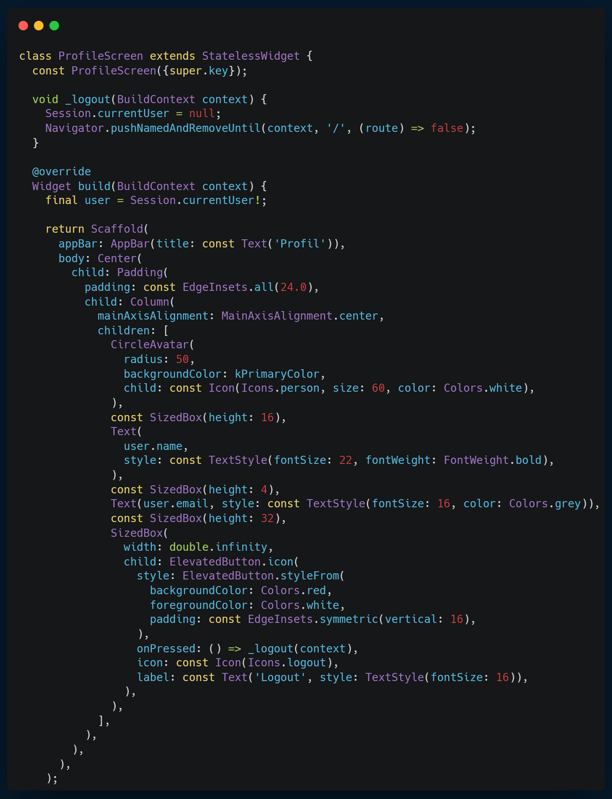
Kode Program: ProfileScreenProfileScreen merupakan StatelessWidget yang mengambil data pengguna dari Session.currentUser, lalu menampilkannya dalam Column yang berisi CircleAvatar dengan ikon person, Text nama, dan Text email. Tombol Logout dibuat menggunakan ElevatedButton.icon berwarna merah. Method _logout mengosongkan Session.currentUser, kemudian memanggil Navigator.pushNamedAndRemoveUntil ke rute '/' dengan kondisi yang selalu bernilai false, sehingga seluruh halaman pada tumpukan dihapus dan pengguna tidak dapat kembali ke halaman sebelumnya setelah logout.
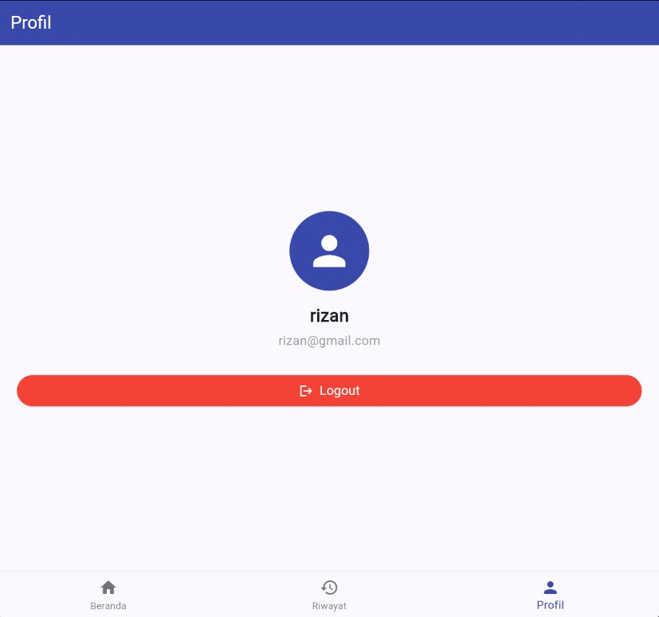
Hasil Tampilan: Halaman ProfilHalaman Profil menampilkan avatar, nama, dan email sesuai akun yang sedang login, dengan tombol Logout di bagian bawah. Menekan tombol tersebut akan mengembalikan pengguna ke halaman Login.
C. Halaman Login
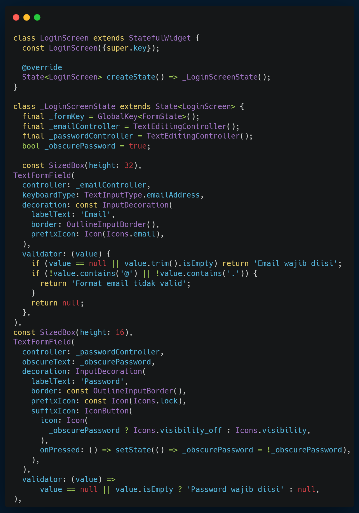
Kode Program: Form pada LoginScreenLoginScreen dibuat sebagai StatefulWidget dengan GlobalKey<FormState> dan dua TextEditingController untuk email dan password. Form berisi ikon dompet, judul aplikasi, TextFormField email dengan validasi wajib diisi serta harus mengandung karakter '@' dan '.', dan TextFormField password dengan obscureText yang dapat diubah melalui IconButton pada suffixIcon. Di bawahnya terdapat tombol Login dan TextButton yang mengarah ke rute '/register'.
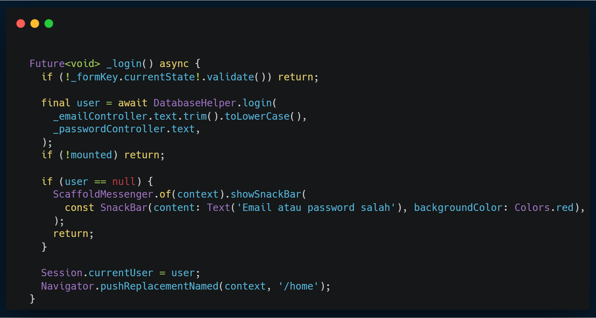
Kode Program: Method _loginMethod _login menjalankan validasi form terlebih dahulu, kemudian memanggil DatabaseHelper.login dengan email yang sudah dirapikan menggunakan trim dan toLowerCase. Apabila hasilnya null, SnackBar merah berisi pesan "Email atau password salah" ditampilkan. Apabila data cocok, objek User disimpan ke Session.currentUser dan aplikasi berpindah ke rute '/home' menggunakan pushReplacementNamed, sehingga halaman login diganti dan tidak dapat diakses kembali melalui tombol kembali. Email pengguna yang login kemudian ditampilkan pada sapaan di halaman Beranda dan pada halaman Profil.
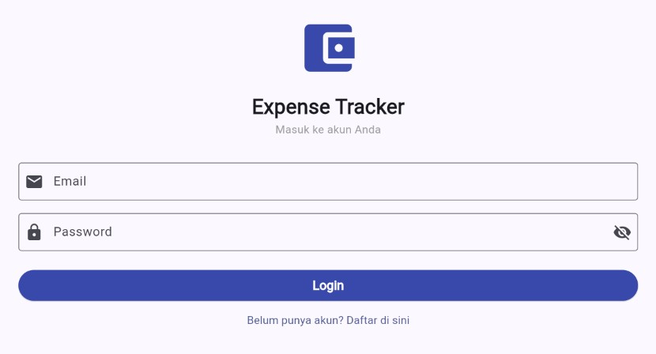
Hasil Tampilan: Halaman LoginHalaman Login menampilkan kolom email dan password beserta tombol Login dan tautan menuju halaman pendaftaran. Apabila tombol Login ditekan saat kolom masih kosong, pesan validasi berwarna merah muncul di bawah kolom yang belum diisi.
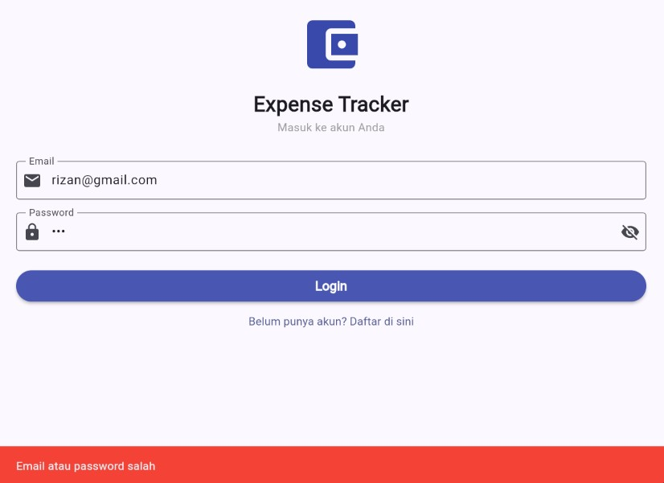
Hasil Tampilan: Login dengan Password SalahKetika email atau password yang dimasukkan tidak sesuai dengan data di database, SnackBar merah berisi pesan "Email atau password salah" muncul dan pengguna tetap berada di halaman Login.
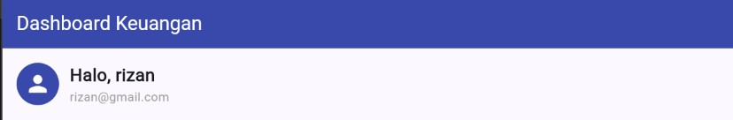
Hasil Tampilan: Email Pengguna pada Halaman BerandaSetelah login berhasil, halaman Beranda menampilkan sapaan berisi nama pengguna beserta email yang diinputkan saat login, sesuai dengan ketentuan tugas.
4. Tugas Akhir: Integrasi Praktikum 1–5 dengan Local Storage
A. Struktur Project dan Package
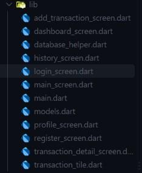
Struktur Folder libSeluruh kode aplikasi disusun di dalam folder lib dan dibagi berdasarkan fungsinya, yaitu main.dart untuk konfigurasi aplikasi dan rute, models.dart untuk model data, database_helper.dart untuk pengelolaan database, file halaman seperti login_screen.dart, register_screen.dart, main_screen.dart, dashboard_screen.dart, add_transaction_screen.dart, transaction_detail_screen.dart, history_screen.dart, dan profile_screen.dart, serta transaction_tile.dart sebagai widget baris transaksi yang digunakan bersama.
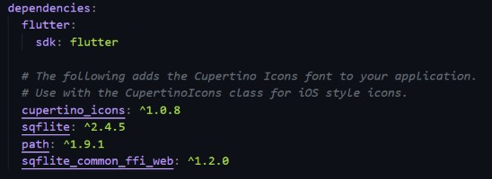
Kode Program: Dependencies pada pubspec.yamlUntuk local storage ditambahkan package sqflite sebagai penghubung ke database SQLite dan package path untuk menyusun lokasi file database. Karena aplikasi juga dijalankan di browser, ditambahkan pula package sqflite_common_ffi_web yang menyediakan SQLite versi web. Package tersebut membutuhkan perintah dart run sqflite_common_ffi_web:setup untuk menambahkan file pendukungnya ke folder web.
B. Model Data dan Session
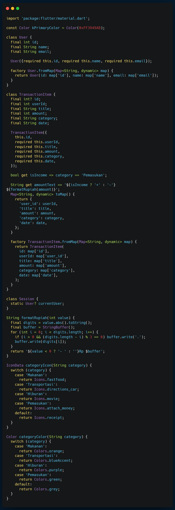
Kode Program: models.dartFile models.dart berisi class User dan TransactionItem yang merepresentasikan satu baris data dari tabel users dan transactions. Keduanya memiliki factory fromMap untuk mengubah hasil query menjadi objek, dan TransactionItem juga memiliki method toMap untuk menyimpan data. Getter isIncome menentukan bahwa transaksi berkategori Pemasukan menambah saldo, sedangkan getter amountText menyusun teks nominal beserta tanda plus atau minus. Class Session menyimpan pengguna yang sedang login dalam variabel static currentUser. File ini juga berisi konstanta kPrimaryColor, fungsi formatRupiah yang memberi pemisah titik setiap tiga digit, serta fungsi categoryIcon dan categoryColor untuk menentukan ikon dan warna setiap kategori.
C. Local Storage dengan SQLite (DatabaseHelper)
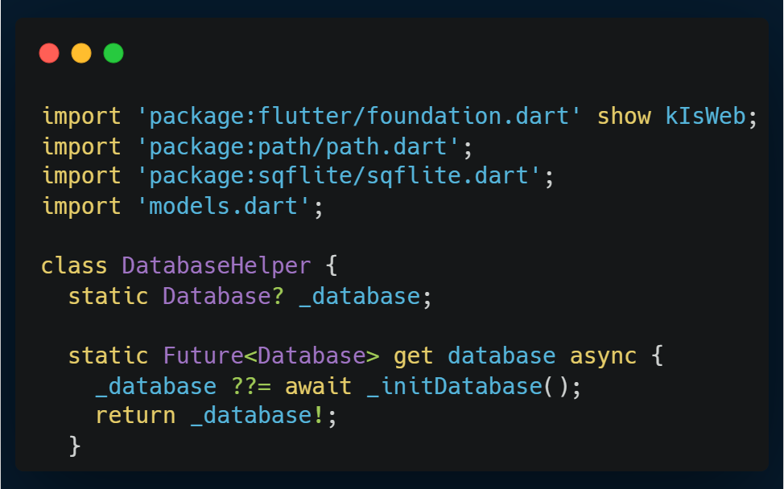
Kode Program: Konfigurasi SQLite Web pada Fungsi mainPada fungsi main, kondisi kIsWeb digunakan untuk mendeteksi apakah aplikasi berjalan di browser. Apabila benar, databaseFactory diganti dengan databaseFactoryFfiWeb agar sqflite menggunakan SQLite versi web, sedangkan saat dijalankan di Android aplikasi tetap menggunakan SQLite bawaan perangkat.
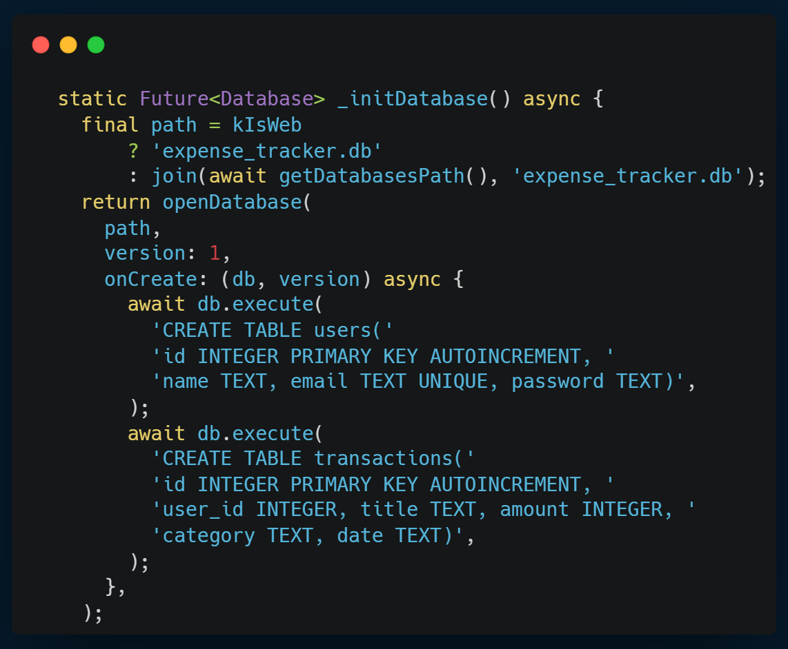
Kode Program: Inisialisasi Database dan Pembuatan TabelClass DatabaseHelper menyimpan objek database dalam variabel static _database, dan getter database menggunakan operator ??= agar database hanya dibuka satu kali. Method _initDatabase menentukan lokasi file expense_tracker.db, lalu memanggil openDatabase dengan callback onCreate yang membuat dua tabel saat database pertama kali dibuat. Tabel users menyimpan nama, email, dan password dengan email bersifat UNIQUE, sedangkan tabel transactions menyimpan user_id, judul, nominal, kategori, dan tanggal sehingga setiap transaksi terhubung dengan pemiliknya.
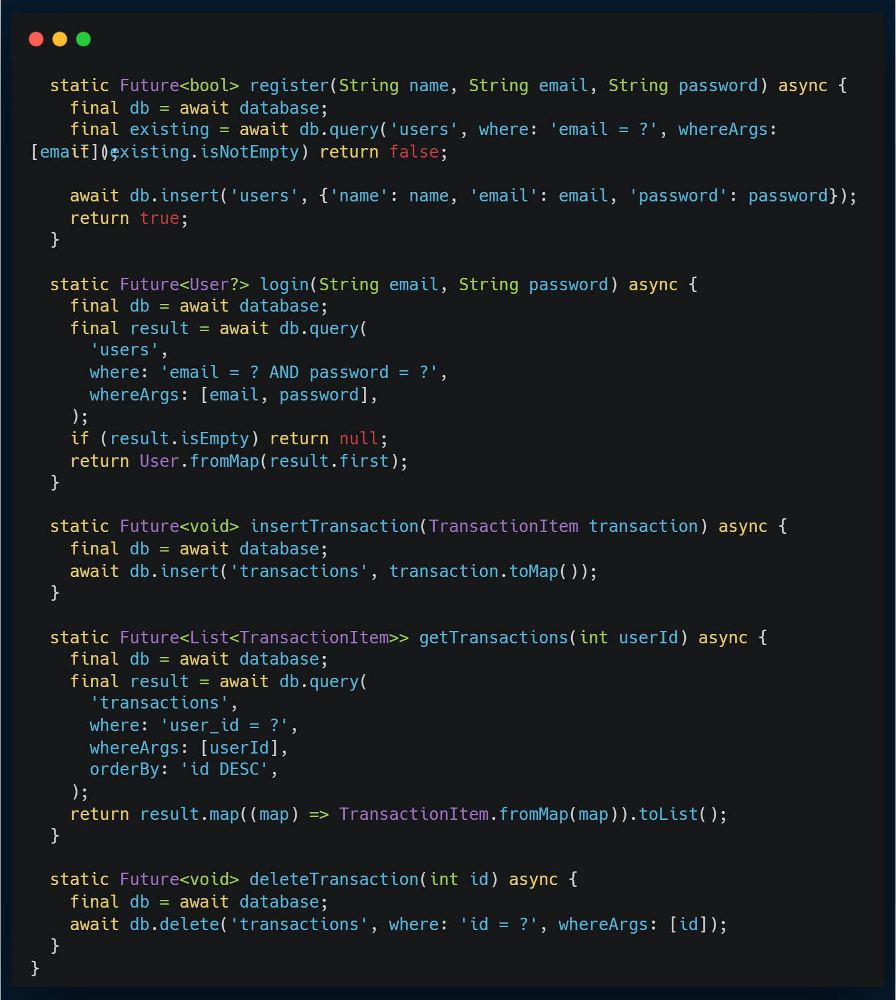
Kode Program: Method Register, Login, dan Pengelolaan TransaksiMethod register memeriksa terlebih dahulu apakah email sudah ada di tabel users, lalu mengembalikan false apabila sudah terdaftar atau menyimpan data baru dan mengembalikan true. Method login mencari baris yang email dan password-nya cocok dan mengembalikan objek User atau null. Untuk transaksi, insertTransaction menyimpan data baru, getTransactions mengambil transaksi berdasarkan user_id dengan urutan id terbaru di atas, dan deleteTransaction menghapus transaksi berdasarkan id. Seluruh query menggunakan parameter whereArgs agar nilai yang dimasukkan pengguna tidak digabungkan langsung ke dalam perintah SQL.
D. Halaman Register
RegisterScreen memiliki empat TextFormField, yaitu nama lengkap, email, password, dan konfirmasi password, masing-masing dengan controller sendiri. Validator nama memastikan kolom tidak kosong, validator email memeriksa format email, validator password mewajibkan minimal enam karakter, dan validator konfirmasi password membandingkan isinya dengan _passwordController.text sehingga pendaftaran ditolak apabila kedua password tidak sama. Kolom password dan konfirmasi password juga dilengkapi tombol untuk menampilkan atau menyembunyikan isinya.
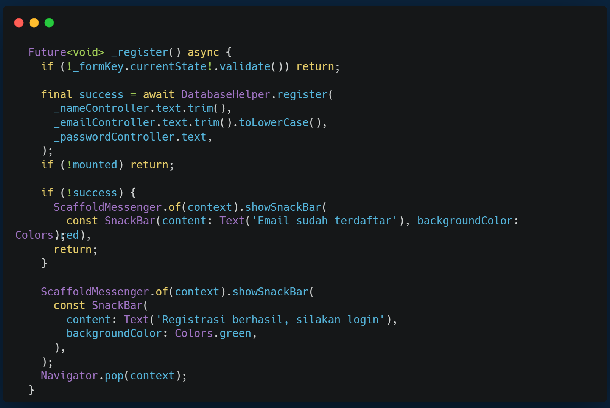
Kode Program: Method _registerMethod _register memanggil DatabaseHelper.register setelah form lolos validasi. Apabila hasilnya false, SnackBar merah berisi pesan "Email sudah terdaftar" ditampilkan. Apabila berhasil, SnackBar hijau muncul dan halaman ditutup menggunakan Navigator.pop sehingga pengguna kembali ke halaman Login untuk masuk dengan akun yang baru dibuat.
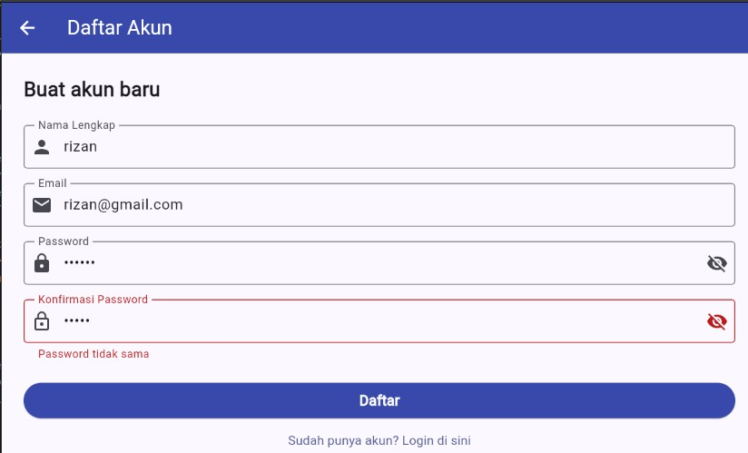
Hasil Tampilan: Validasi Konfirmasi PasswordApabila isi kolom konfirmasi password berbeda dengan kolom password, pesan "Password tidak sama" muncul di bawah kolom konfirmasi dan data tidak disimpan ke database.
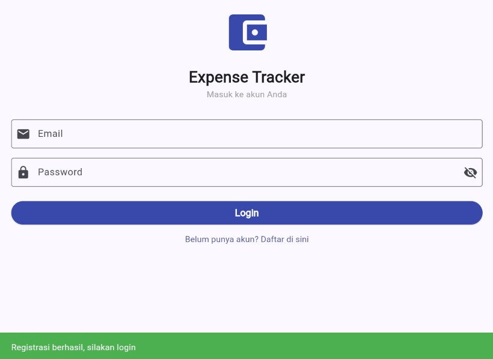
Hasil Tampilan: Registrasi BerhasilSetelah seluruh kolom diisi dengan benar, SnackBar hijau bertuliskan "Registrasi berhasil, silakan login" muncul dan aplikasi kembali ke halaman Login.
E. Integrasi Halaman Beranda dengan Database
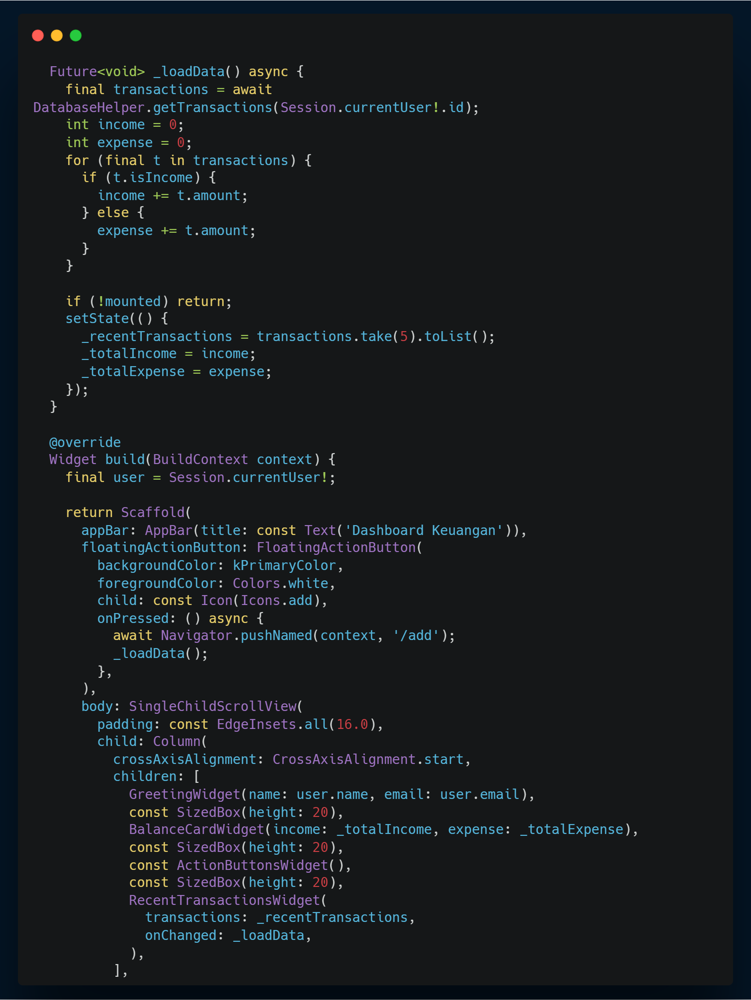
Kode Program: State dan Method _loadData pada DashboardScreenDashboardScreen yang pada praktikum sebelumnya berupa StatelessWidget kini diubah menjadi StatefulWidget karena datanya diambil dari database. Method _loadData dipanggil pada initState untuk mengambil transaksi milik pengguna, lalu menjumlahkan nominal transaksi pemasukan ke _totalIncome dan transaksi lainnya ke _totalExpense. Lima transaksi teratas disimpan ke _recentTransactions untuk ditampilkan sebagai Transaksi Terakhir.
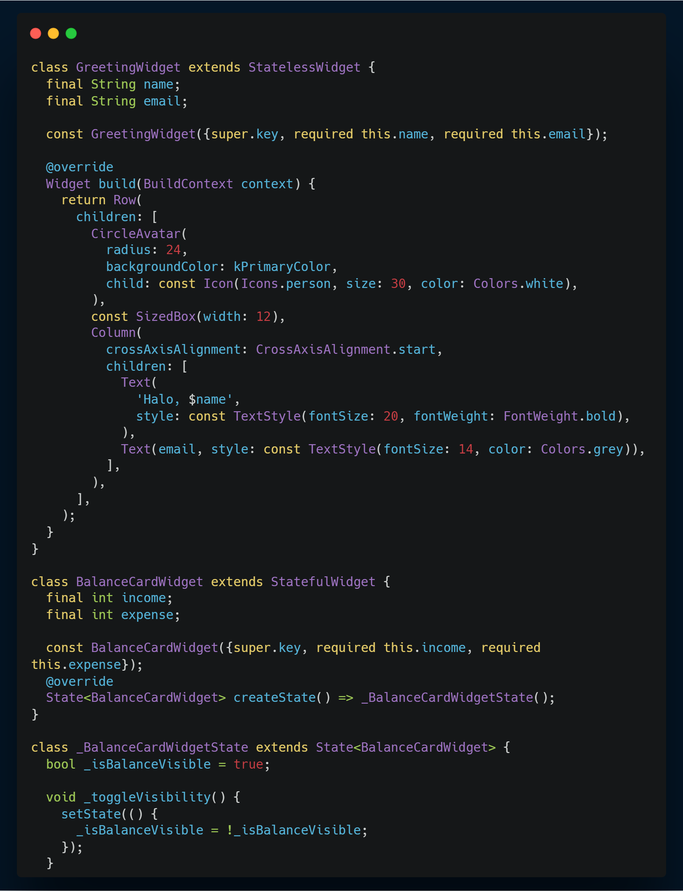
Kode Program: GreetingWidget dan BalanceCardWidgetGreetingWidget tetap berupa StatelessWidget dengan Row berisi CircleAvatar dan Column teks, namun kini menerima nama dan email melalui constructor sehingga sapaan sesuai dengan pengguna yang login. BalanceCardWidget tetap berupa StatefulWidget dengan variabel _isBalanceVisible dan setState untuk menyembunyikan saldo. Saldo utama dihitung dari income dikurangi expense, kemudian di bawahnya ditambahkan Divider dan Row berisi dua ringkasan yang dibangun melalui method _buildSummary, yaitu total pemasukan dengan ikon panah bawah hijau dan total pengeluaran dengan ikon panah atas merah. Ringkasan ini juga ikut tersensor ketika saldo disembunyikan.
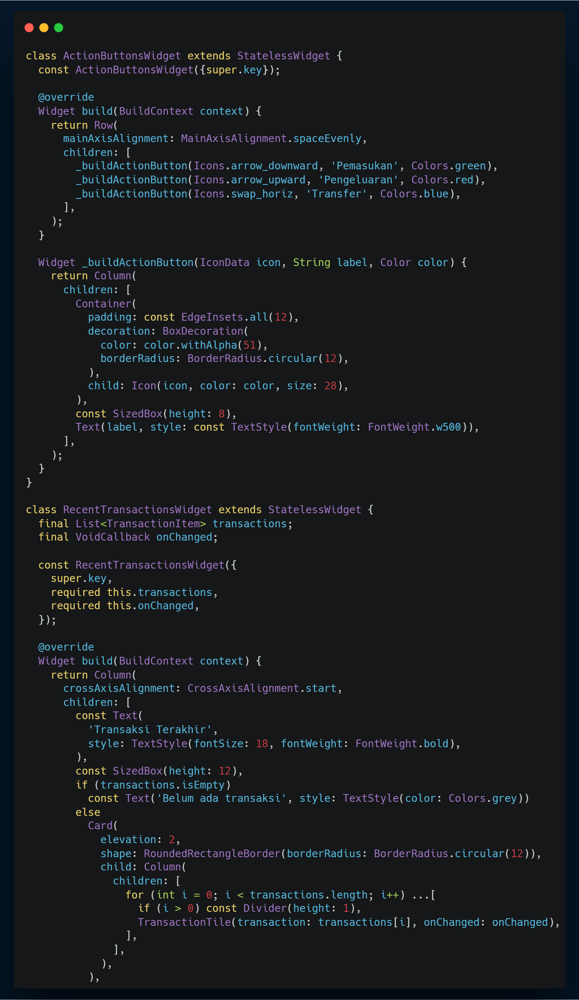
Kode Program: ActionButtonsWidget dan RecentTransactionsWidgetActionButtonsWidget dipertahankan dengan Row spaceEvenly berisi tiga tombol yang dibangun melalui _buildActionButton, yaitu Column berisi Container berwarna transparan dan label teks. RecentTransactionsWidget menampilkan judul Transaksi Terakhir dan Card berisi Column. Setiap transaksi ditampilkan melalui TransactionTile dengan Divider di antaranya menggunakan perulangan for, atau teks "Belum ada transaksi" apabila datanya kosong. Widget ini juga menerima callback onChanged agar daftar dapat dimuat ulang ketika transaksi dihapus dari halaman detail.
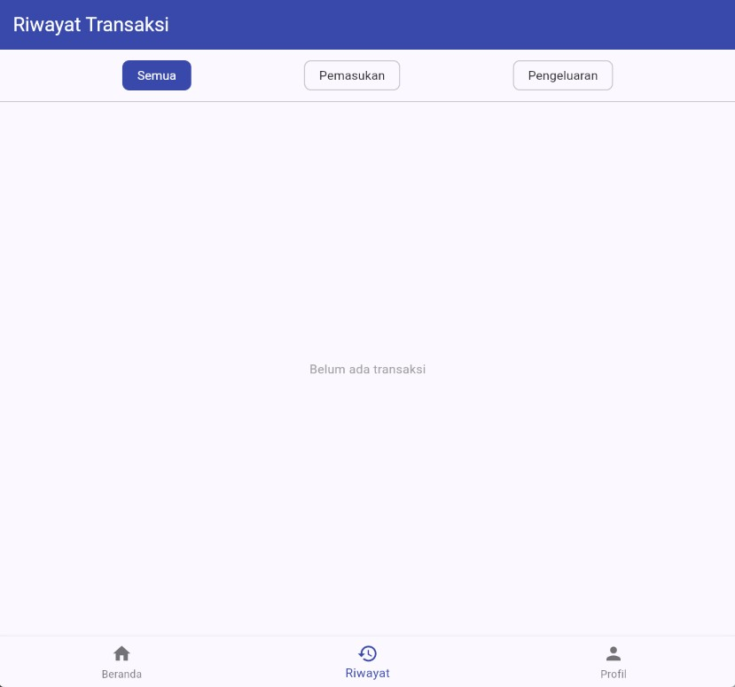
Hasil Tampilan: Beranda Sebelum Ada TransaksiUntuk akun yang baru didaftarkan, kartu saldo menampilkan saldo, pemasukan, dan pengeluaran bernilai nol, sedangkan bagian Transaksi Terakhir menampilkan teks "Belum ada transaksi".
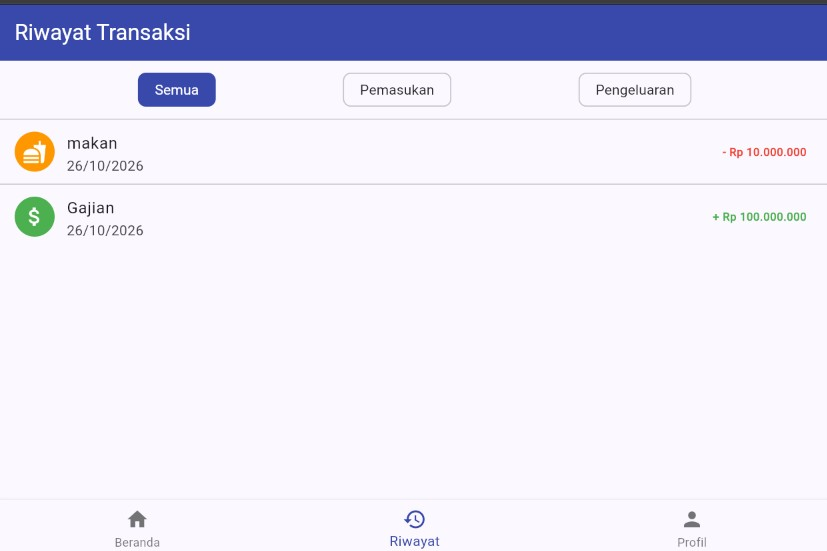
Hasil Tampilan: Beranda Setelah Transaksi DitambahkanSetelah transaksi ditambahkan, saldo utama beserta ringkasan pemasukan dan pengeluaran terhitung otomatis, dan transaksi terbaru muncul pada daftar Transaksi Terakhir dengan warna nominal sesuai jenisnya.
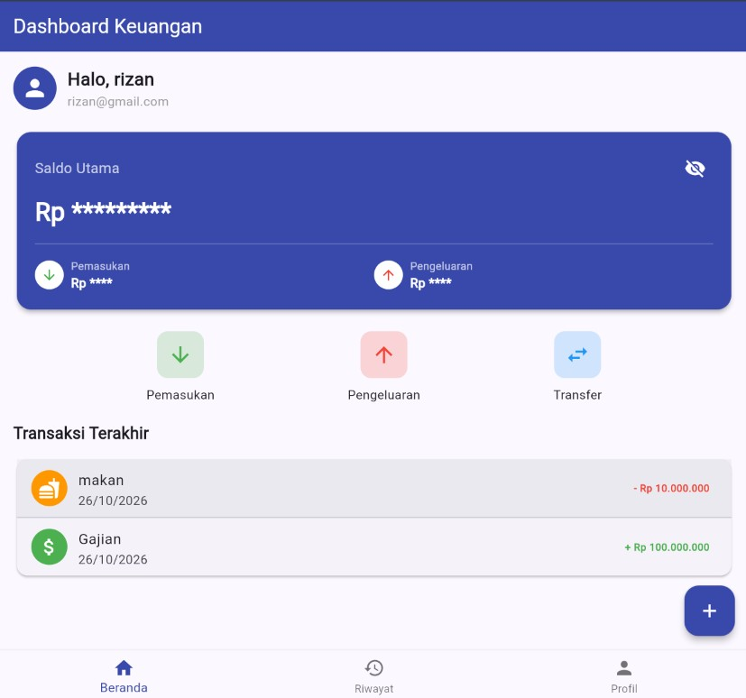
Hasil Tampilan: Saldo dan Ringkasan DisembunyikanKetika ikon mata ditekan, saldo utama serta nominal pemasukan dan pengeluaran pada kartu berubah menjadi tanda bintang.
F. Form Tambah Transaksi dengan Penyimpanan ke Database
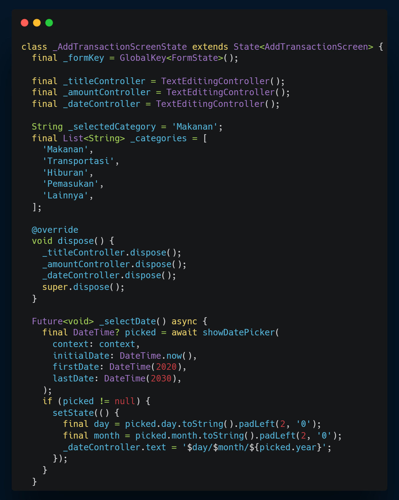
Kode Program: Controller, Kategori, dan Method _selectDateAddTransactionScreen memiliki tiga TextEditingController untuk judul, nominal, dan tanggal, serta daftar kategori yang kini ditambah opsi Pemasukan agar pengguna dapat mencatat transaksi pemasukan. Method _selectDate memanggil showDatePicker, lalu memformat tanggal yang dipilih ke pola DD/MM/YYYY menggunakan padLeft, sedangkan method dispose membersihkan seluruh controller ketika halaman ditutup.
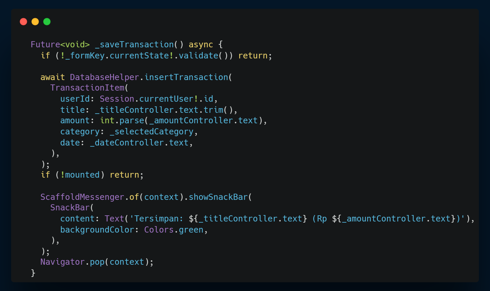
Kode Program: Method _saveTransactionMethod _saveTransaction menjalankan validasi form, kemudian membuat objek TransactionItem dari isi setiap kolom beserta id pengguna dari Session dan menyimpannya melalui DatabaseHelper.insertTransaction. Setelah tersimpan, SnackBar hijau ditampilkan dan halaman ditutup dengan Navigator.pop. Validator nominal juga diperketat sehingga selain harus berupa angka bulat, nilainya harus lebih dari nol.
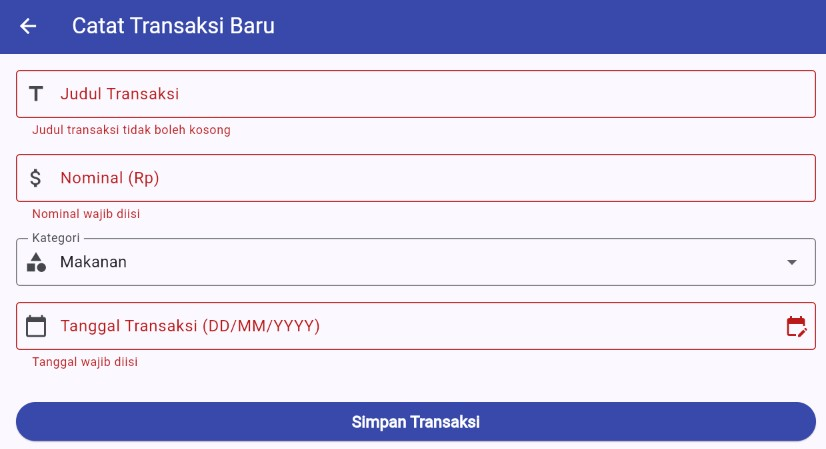
Hasil Tampilan: Validasi Form Tambah TransaksiApabila tombol Simpan Transaksi ditekan saat form masih kosong, pesan validasi berwarna merah muncul pada kolom judul, nominal, dan tanggal.
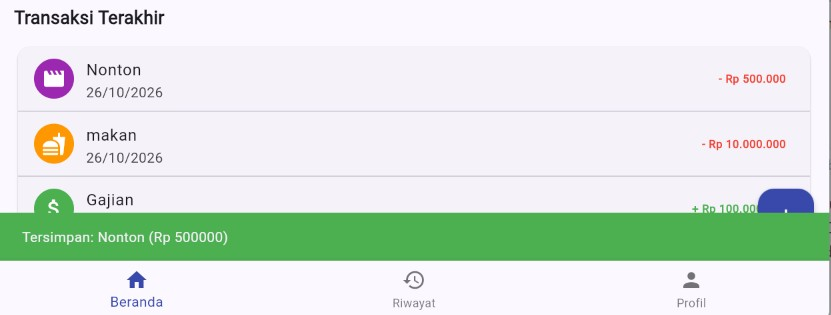
Hasil Tampilan: Form Tambah Transaksi TerisiForm yang telah diisi menampilkan judul, nominal, kategori yang dipilih, dan tanggal dalam format DD/MM/YYYY. Setelah disimpan, aplikasi kembali ke Beranda dengan data yang sudah diperbarui.
G. Detail dan Hapus Transaksi
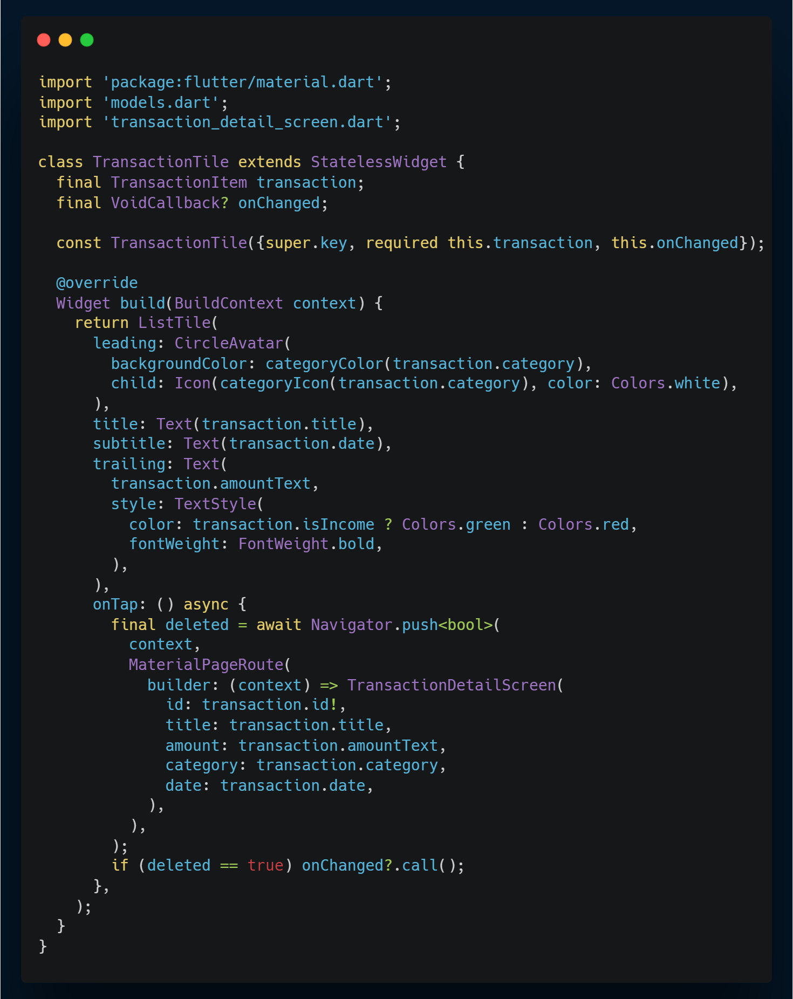
Kode Program: TransactionTileTransactionTile merupakan ListTile yang digunakan bersama oleh halaman Beranda dan Riwayat. Bagian leading menampilkan CircleAvatar dengan ikon dan warna sesuai kategori, title berisi judul, subtitle berisi tanggal, dan trailing berisi nominal berwarna hijau atau merah. Pada onTap, data transaksi dikirim melalui constructor ke TransactionDetailScreen menggunakan Navigator.push. Hasil dari halaman detail ditunggu dengan await, dan apabila bernilai true, callback onChanged dipanggil untuk memuat ulang daftar transaksi.
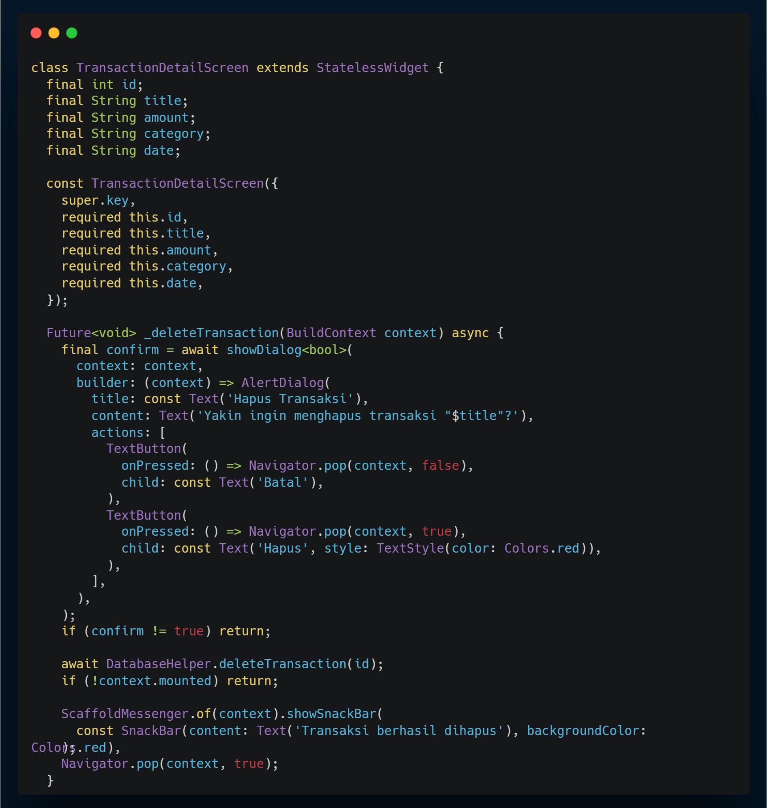
Kode Program: Constructor dan Method _deleteTransactionTransactionDetailScreen kini menerima tambahan parameter id melalui constructor agar transaksi dapat dihapus. Method _deleteTransaction menampilkan AlertDialog berisi tombol Batal dan Hapus. Apabila pengguna memilih Hapus, transaksi dihapus melalui DatabaseHelper.deleteTransaction, SnackBar ditampilkan, lalu halaman ditutup dengan Navigator.pop(context, true) sebagai tanda bahwa data telah berubah. Warna nominal pada halaman detail juga disesuaikan menjadi hijau untuk pemasukan dan merah untuk pengeluaran.
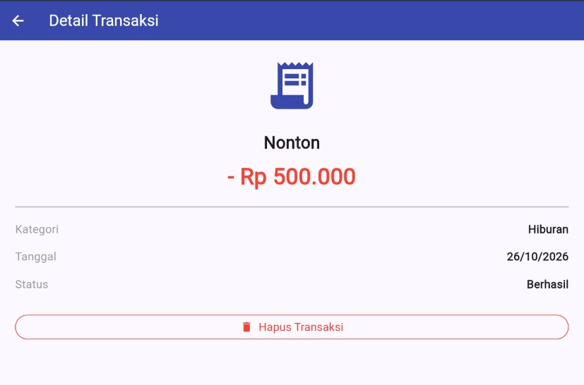
Hasil Tampilan: Halaman Detail TransaksiHalaman detail menampilkan judul, nominal, kategori, tanggal, dan status transaksi yang dipilih, dengan tombol Hapus Transaksi berwarna merah di bagian bawah.
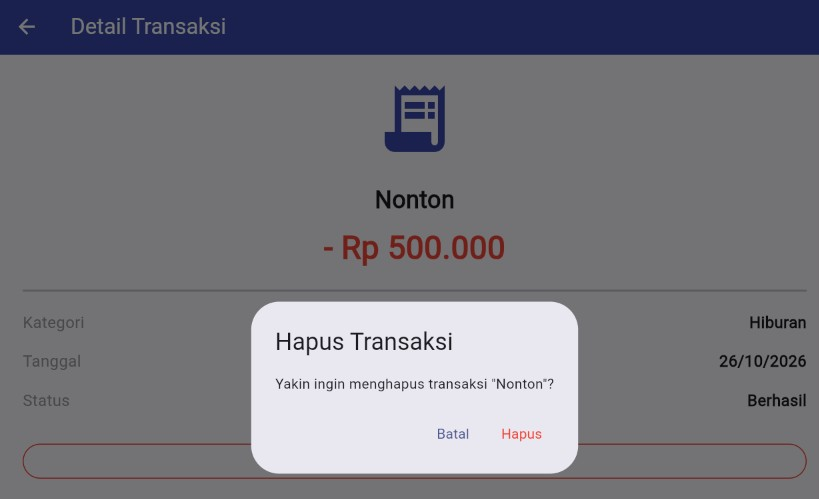
Hasil Tampilan: Dialog Konfirmasi HapusSaat tombol Hapus Transaksi ditekan, dialog konfirmasi muncul terlebih dahulu. Setelah dikonfirmasi, aplikasi kembali ke halaman sebelumnya dan transaksi tersebut sudah tidak tampil, dengan saldo yang ikut diperbarui.
H. Pengujian Penyimpanan Data
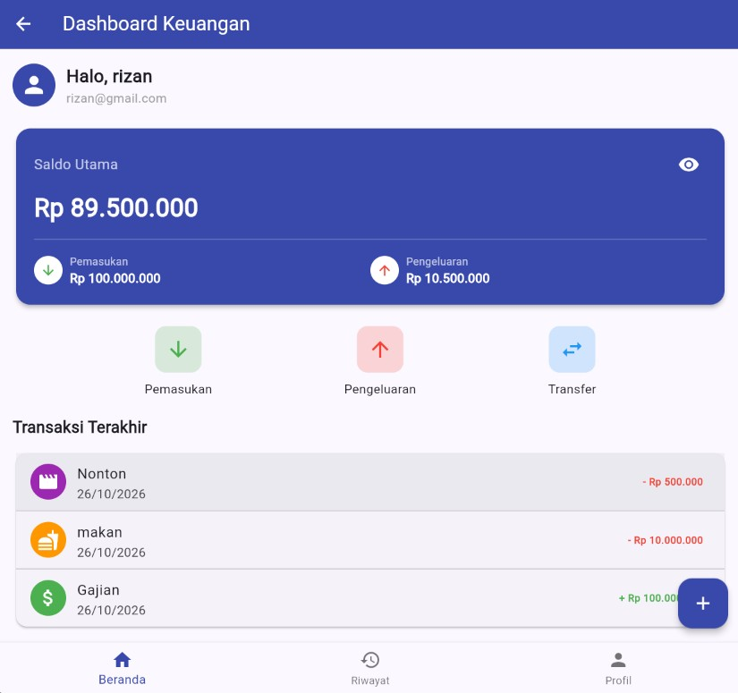
Hasil Tampilan: Data Tetap Tersimpan Setelah Halaman Dimuat UlangPengujian dilakukan dengan logout, memuat ulang halaman browser sehingga aplikasi dijalankan kembali dari awal, lalu login menggunakan akun yang sama. Akun tetap dapat digunakan dan seluruh transaksi beserta saldo masih tampil seperti sebelumnya, yang menunjukkan bahwa data tersimpan pada database SQLite dan tidak hanya berada di memori sementara aplikasi.
I. Build Aplikasi menjadi APK
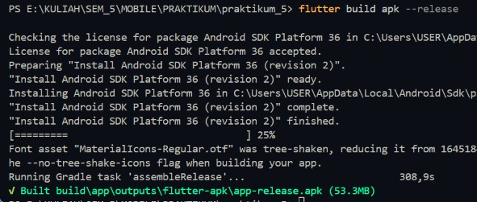
Proses Build APKAplikasi dibangun menjadi file instalasi Android menggunakan perintah flutter build apk --release. Perintah ini mengompilasi kode Dart beserta seluruh package ke dalam mode release yang lebih ringan dan cepat dibandingkan mode debug.
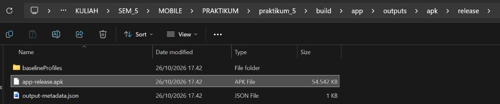
Hasil File APKFile hasil build bernama app-release.apk dan berada di folder build/app/outputs/flutter-apk. File tersebut dapat langsung dipasang pada perangkat Android.
5. Kesimpulan
Berdasarkan praktikum yang telah dilakukan, dapat disimpulkan bahwa Named Routes membuat pengelolaan navigasi menjadi lebih terpusat karena seluruh halaman didaftarkan di satu tempat, sedangkan BottomNavigationBar memungkinkan beberapa halaman utama diakses dalam satu wadah dengan mengganti isi body berdasarkan indeks tab yang aktif. Penggabungan Praktikum 1 sampai 5 menunjukkan bahwa konsep StatelessWidget dan StatefulWidget, widget tata letak, formulir dengan validasi, serta navigasi dan passing data dapat dipadukan menjadi satu aplikasi yang utuh. Penambahan local storage menggunakan SQLite membuat data akun dan transaksi tetap tersimpan meskipun aplikasi dijalankan ulang, sekaligus memungkinkan fitur register dan login yang memisahkan data setiap pengguna.